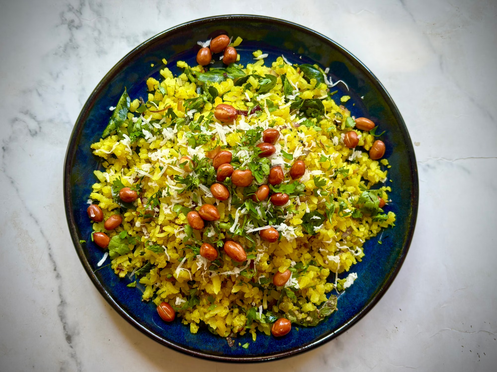

Cook With MePoha
⭐⭐⭐⭐⭐ 4.3 Rating | ⏱ 15 Minutes | 🍽 3 Servings
Category
Main Course
Difficulty
Easy
Calories
240 kcal
Cooking Style
Culinary Method
📋 Ingredients
- Medium or Thick Poha: 2 cups
- Oil: 2 tbsp
- Peanuts: 2 tbsp (raw)
- Tempering: 1 tsp mustard seeds, 1/2 tsp cumin seeds, 8–10 curry leaves, 2 chopped green chilies, pinch of asafoetida (hing)
- Veggies: 1 large onion (finely chopped), 1 small potato (diced small, optional)
- Seasoning: 1/2 tsp turmeric powder, 1/2 tsp sugar, salt to taste
- Garnish: Fresh coriander, 1 tbsp lemon juice, 2 tbsp grated coconut or sev
🍳 Required Utensils
- Fine-mesh colander / sieve
- Non-stick or heavy-bottomed kadai / pan with lid
- Spatula for gentle tossing
- Measuring cups and spoons
📖 Introduction
Poha (specifically Kanda Poha) is a beloved Indian breakfast staple originating from Maharashtra and Western India. Made from parboiled, flattened rice flakes tempered with mustard seeds, curry leaves, turmeric, and onions, it is cherished for being lightweight, fast to cook, and highly satisfying.
🔬 Principle
The core culinary principle of Poha relies on hydration via quick rinsing rather than boiling. Because flattened rice is pre-cooked during processing, it softens upon contact with minimal water. The tempered oil traps steam, allowing the rice flakes to absorb heat and flavors without breaking down or turning mushy.
👨🍳 Procedure
- 1.Rinse & Season the Poha:Place the thick poha in a colander and rinse under gentle running water for 15-20 seconds. Drain completely. Sprinkle the turmeric, sugar, and salt directly over the softened poha and toss gently.
- 2.Fry Nuts & Potatoes:Heat oil in a kadai. Fry raw peanuts until golden-brown and crisp, then remove. In the same oil, sauté diced potatoes on low heat until fully cooked and tender; set aside.
- 3.Sauté Tempering Base:Add mustard seeds and cumin to the hot oil. Once they crackle, add curry leaves, green chilies, and asafoetida. Add the chopped onions and sauté until translucent (avoid browning).
- 4.Combine & Cover-Steam:Add the cooked potatoes, fried peanuts, and seasoned poha into the pan. Mix gently with a spatula from bottom to top. Cover with a tight lid and steam on low heat for 2–3 minutes.
- 5.Finish & Garnish:Turn off the heat. Drizzle fresh lemon juice and toss in fresh coriander. Top with grated coconut or crispy sev.
⚠ Precautions
- Avoid Over-soaking: Never submerge poha in water always rinse it in a sieve to prevent sogginess.
- Diabetic Caution: Poha has a high glycemic index pair it with extra vegetables, sprouts, or peanuts to add fiber and slow down sugar absorption.
💡 Chef Tips
- Use Thick Poha: Thin poha turns into paste when rinsed; always choose medium or thick varieties for cooking.
- The Touch Test: After rinsing, press a flake between your fingers—it should mash easily. If dry, sprinkle 1–2 tablespoons of water over it.
- Don't Over-mix: Stir gently using a lifting motion to keep the flattened rice flakes intact.
🥗 Nutrition Facts
| Nutrient | Amount |
|---|---|
| Calories | 220-250 kcal |
| Protein | 5 g |
| Carbohydrates | 38 g |
| Fat | 8 g |
| Dietary Fiber | 3 g |
🍽 Serving Suggestions
- Serve piping hot alongside a cup of hot Indian masala chai or filter coffee.
- Pair with hot Jalebi for the classic Central Indian (Indori/Bhopali) sweet-and-savory combo.
🌿 Health Benefits
- Easy Digestion: Gentle on the stomach and rapidly digested, making it an ideal morning energy source.
- Iron-Enriched: The flattened rice manufacturing process (pressing between iron rollers) boosts its natural iron content.
- Probiotic Potential: Subjected to mild fermentation during its production, benefiting gut flora.
✅ Result
A fluffy, bright-yellow rice dish with non-sticky, distinct flakes that deliver a savory, mild, and nutty taste balance with a splash of fresh citrus.
🎥 Watch Recipe Video
Learn the complete recipe by watching the step-by-step video.
▶ Watch on YouTube